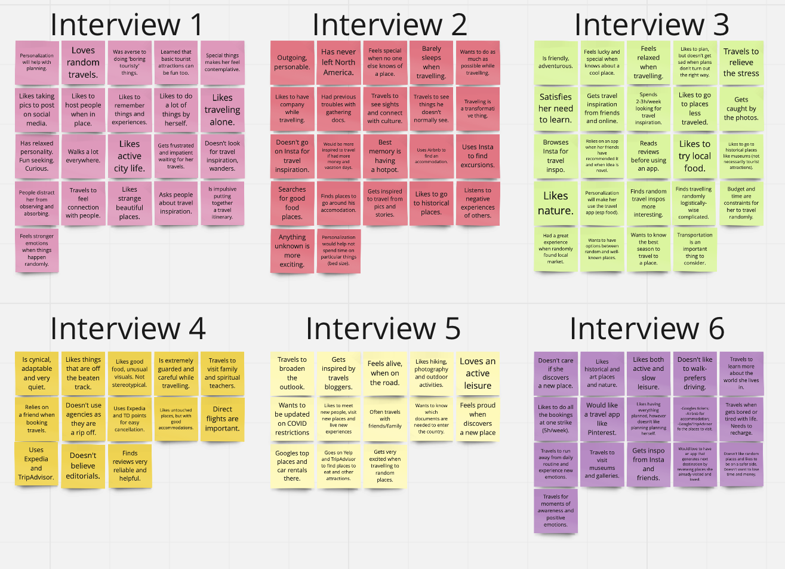
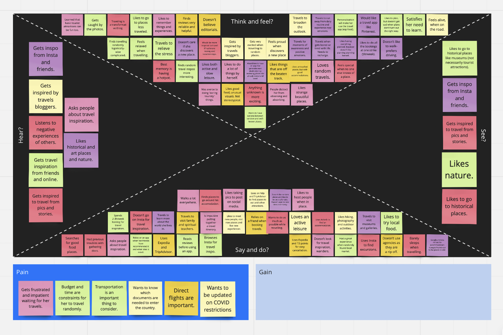
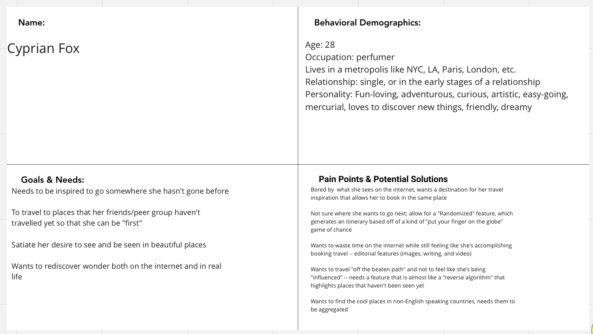
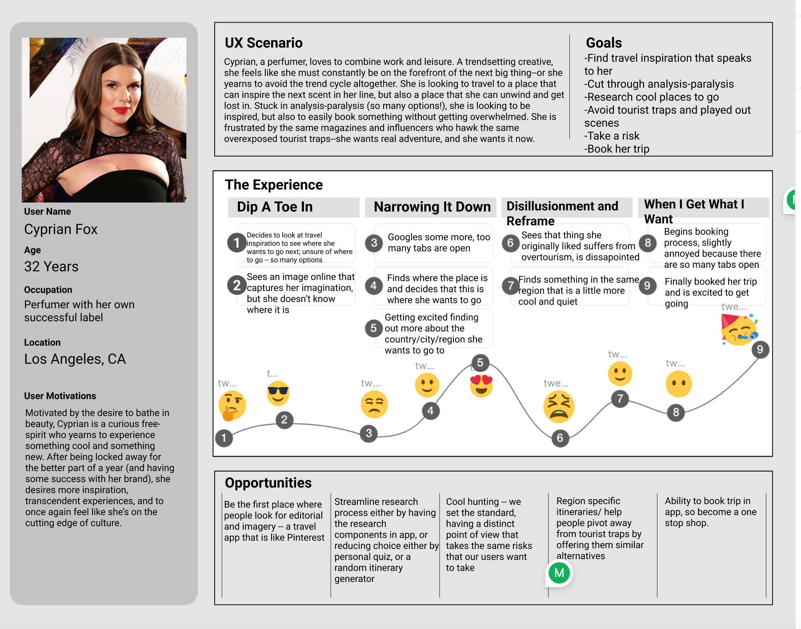
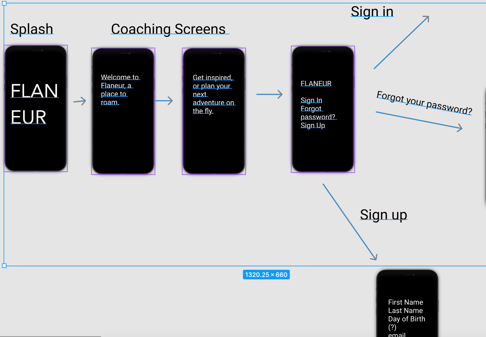
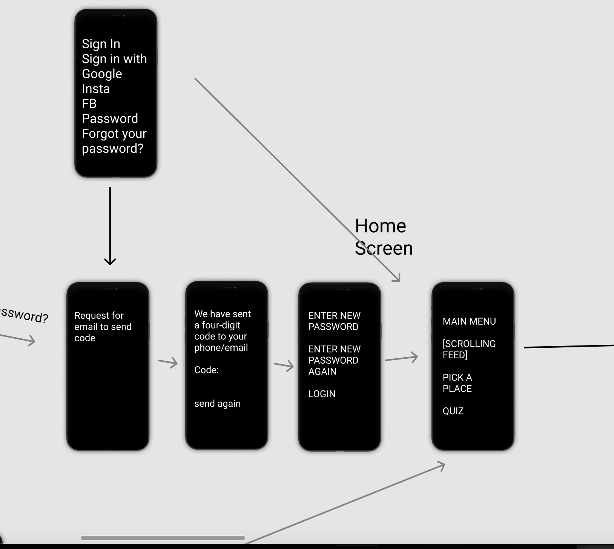
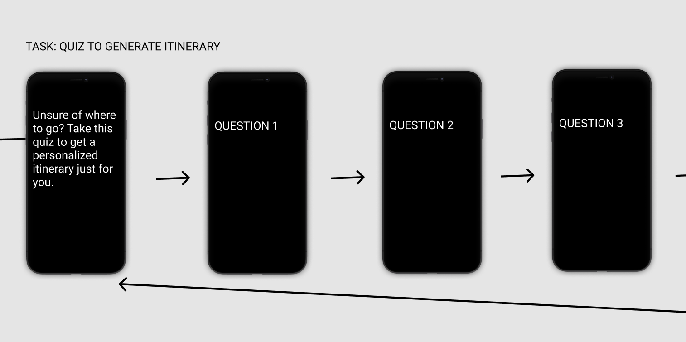
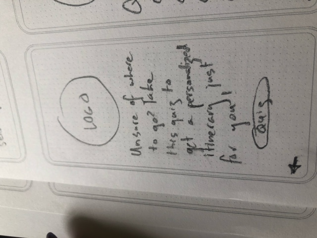

Flaneur Travel App
Project Overview
My Role
As a solo project, I was responsible for every step of the process. From conceptualization to design to user testing, I put my user researcher skills to use to develop the app.
Design Process

User Research
A crucial part of the process was interviewing prospective users. I chose people across different backgrounds who were intrigued and interested by travel. I wanted individuals with something to say, and who were curious and experimental.
- - When you travel, is there a specific reason you are travelling for?
- -What purpose does travel serve in your life?
- -Approximately how long per week do you spend looking at travel inspiration? Is there anything that would increase or decrease that amount of time?
- -What’s the best travel experience you’ve had and why?
- -Describe your travel planning style (what steps do you take? What apps do you use?)
- -Tell me about how you get inspired to travel?
- -Where do you glean your travel inspiration from?
- -Does good editorial have an impact on what travel decisions you make?
- -What do you feel is missing from your travel inspiration sources?
- -How important are the opinions of others when you are putting together a travel itinerary?
- -What types of places, excursions, experiences, etc. are you looking for when you travel?
- -How would greater personalization influence your decision to travel to a place you’ve never been?
- -Have you ever travelled to a place at random? If so, how did this make you feel? How was your trip? Would you ever do it again?
- - Describe an experience when you felt like you came across something special when travelling. How did it make you feel?
After interviews, I sorted key findings into an affinity diagram.
 Persona
A persona was developed to represent the ideal Flaneur user based off of interview findings Cyprian Fox a young perfumer was developed in order to humanize the development process. could solve.
How might we inspire users like Cyprian to get them excited about their next trip?
During qualitative research, we discovered that people who described themselves as outgoing and/or adventurous were more likely to respond positively to the prospect of taking a spur of the moment trip to a completely random destination, if factors such as money and time were otherwise accounted for.
Therefore, we believe that a market for personalized-yet-randomized travel itineraries and inspiration exists and that we might be able to help if we [create an app that synthesizes peoples’ need for unique travel inspiration with the ability to generate and book itineraries/experiences that speak to the user’s desire for novelty and excitement].
We might do this by [creating a “put your finger on the globe” feature, which enables the user to generate a full itinerary based on pure chance. For users who are more reluctant to book vacations based on complete chance, we can set parameters that stick to a particular region, area, or take more personal preferences into account ]. Doing this will allow our product to [become the premiere destination for people who are looking to book travel, and a hub for people who are looking for compelling travel inspiration].
I brainstormed using the I Like, I Wish, What if? format to get perspective on what Cyprian would want out of the app
User Scenario
One way I analyzed and anticipated Cyprian's needs/strong> was through the creation of a user scenario, in which I plotted out the highs and lows of her planning a vacation. Through this, I was able to figure out where specifically Flaneur could intervene to create a more enjoyable process.
Competitor Analysis
To gain greater insight into the app market for travel inspiration, I analyzed Wanderlog and Lonely Planet. These were direct competitors for Flaneur because they both offered users particular insights that influenced what users decided to do on holiday. Through my research, I learned that there wasn't really a place that combined travel inspiration with the ability to generate customized itinerary.
User Flows
I created flows for the onboarding process and the quiz feature.   
Sketches
After generating the user flows, I sketched a basic design.
Digital wireframes
I designed digital wireframes using Figma.

Prototype
Next Steps
- Add more colour and design
- Develop the Pick A Place feature where users can "put their finger on the globe" and spin to generate a completely randomized itinerary.
- Reformulate how content looks on the site/ begin to add options for videos and uploads.
- Consider adding community aspect to the app.
What I Learned
This project was my first experience with taking an idea through to the completion stage. I learned how difficult it was to translate the things that germinate in my head to actionable design.